Default V2 fully contains 32/73 supplied GT boxes (43.8%), with 71.25 ROIs/image and approximately 0.31 seconds/image locally. Median/p90 compact ROI-to-GT area ratio at >=95% coverage is 3.32/15.01. Only 20/73 GTs satisfy >=95% coverage with area ratio <=4. This is not a solved proposal generator.
Merging cuts 498.5 unmerged candidates/image to 71.25 (85.7% reduction), increases >=95% coverage from 31 to 32 GTs, and increases strict containment from 30 to 32. However, median compact area ratio rises from 1.60 to 3.32, and IoU>=0.5 matches decrease from 31 to 13. This is the expected tradeoff of keeping larger enclosing regions, not a blanket improvement.
Both Green>40% and Green-or-Blue>50% reject zero candidates in this V2 sample, and their merged outputs equal the no-background-filter outputs. Earlier V1 filtering gains cannot be carried over to this different red/orange generator. This sample gives no evidence of benefit or damage from the V2 background gates.
Lowering the saturation threshold from 0.35 to 0.25 increases >=95% coverage to 44/73 and strict containment to 43/73, with 88.33 ROIs/image. But compact area-ratio p90 rises to 281.12, and only 21/73 GTs meet >=95% coverage with area ratio <=4. Much of the extra containment lacks compactness; the default remains 0.35 pending a larger reviewed training study. All chromatic evidence bands use this saturation threshold, not just red/orange.
Default class breakdown: cone 7/7, roadworks 0/3, vertical_pannel 25/63 strictly contained. Of 41 GTs missed at >=95%, 35 have fewer than four red/orange support pixels inside their supplied rectangle at working resolution; six have support but no containing proposal. This suggests inspecting weak-color/tiny targets and window/context placement first. The support count is observational, not proof of the failure cause. Broad roadworks group annotations also need visual review; the three-box count cannot support a class-level conclusion.
The bank was fitted on all official training GT, and evaluation uses a 12-image training subset. Labels remain unverified and imbalanced. No test images or classifiers were used. No global optimality or held-out performance is claimed.
Training development sample only; supplied GT is unverified and can include background/groups. No classification, intensity or precision/F1. GT is never supplied to image-specific proposal generation.
Green-blue-50-s25 changes only the saturation lower bound from 0.35 to 0.25; background-50 comparisons use 0.35. Diagnosis categories describe observed support, not verified failure causes.
Green and blue refer to HSV pixel membership, not semantic background masks. Merging is bounded against a fixed original seed and rechecks background. Compact area ratios use the smallest eligible ROI for each covered GT; uncovered GT has no ratio.
| method | gt_boxes | compact_coverage_95_area_le_4 | gt_coverage_95 | gt_coverage_100 | iou_05 | area_ratio_95_median | area_ratio_95_p90 | area_ratio_100_median | mean_roi_count | mean_runtime_seconds | lost_vs_no_filter_covered_95 | lost_vs_no_filter_covered_100 |
|---|---|---|---|---|---|---|---|---|---|---|---|---|
| no_background_filter | 73 | 0.274 | 0.438 | 0.438 | 0.178 | 3.316 | 15.010 | 3.645 | 71.250 | 0.199 | 0.000 | 0.000 |
| green_40 | 73 | 0.274 | 0.438 | 0.438 | 0.178 | 3.316 | 15.010 | 3.645 | 71.250 | 0.194 | 0.000 | 0.000 |
| green_blue_50_unmerged | 73 | 0.356 | 0.425 | 0.411 | 0.425 | 1.599 | 11.537 | 1.947 | 498.500 | 0.197 | 1.000 | 2.000 |
| green_blue_50 | 73 | 0.274 | 0.438 | 0.438 | 0.178 | 3.316 | 15.010 | 3.645 | 71.250 | 0.306 | 0.000 | 0.000 |
| green_blue_50_s25 | 73 | 0.288 | 0.603 | 0.589 | 0.151 | 4.064 | 281.122 | 4.539 | 88.333 | 0.337 | 0.000 | 0.000 |
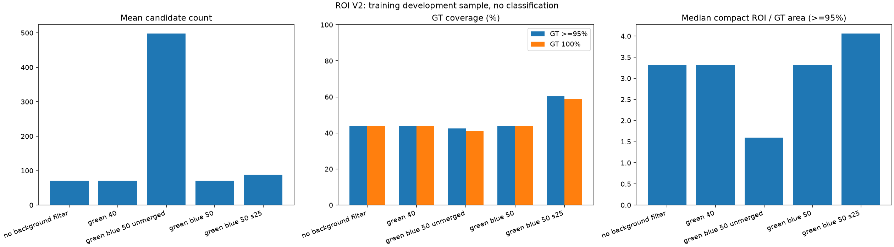
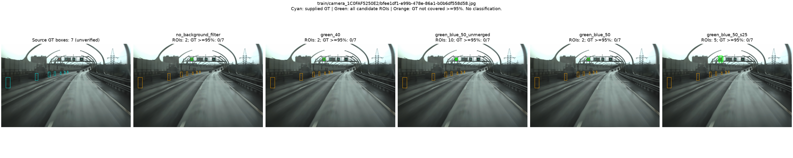
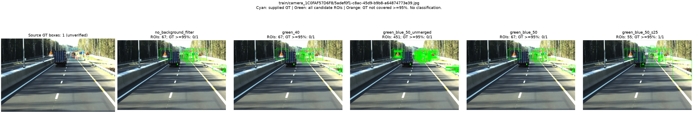
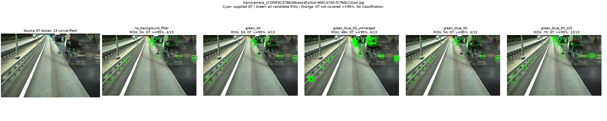
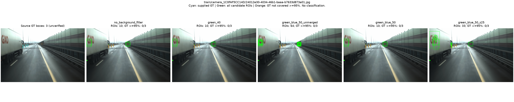
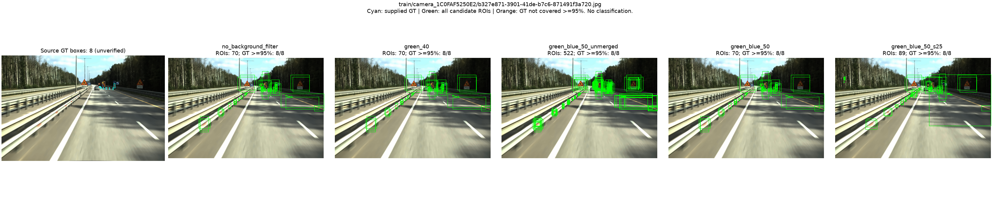
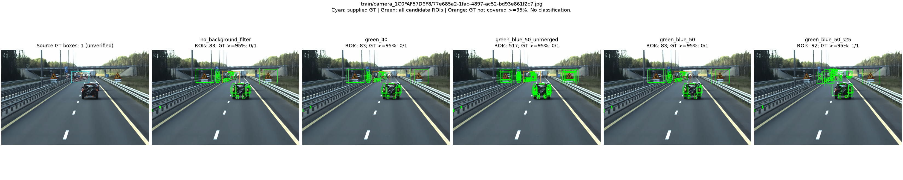
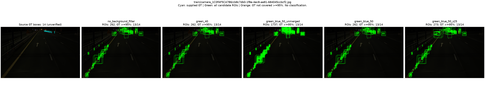
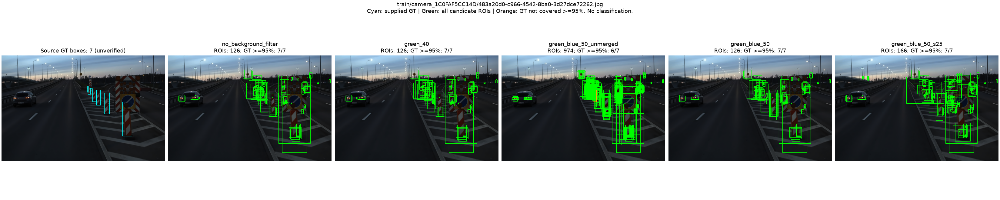
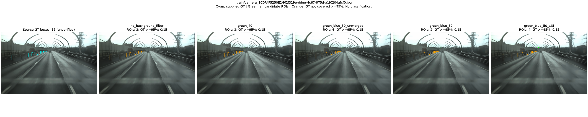
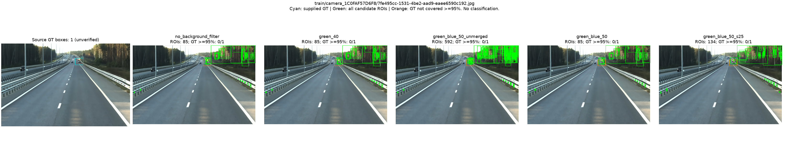
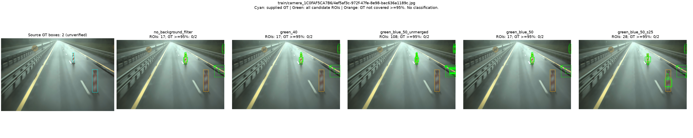
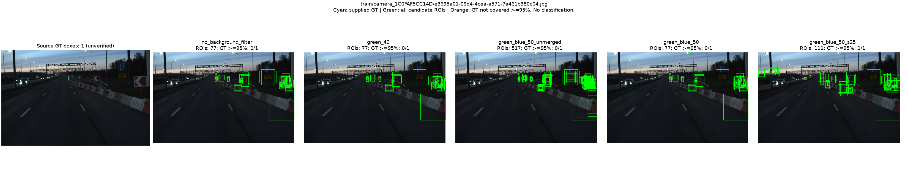